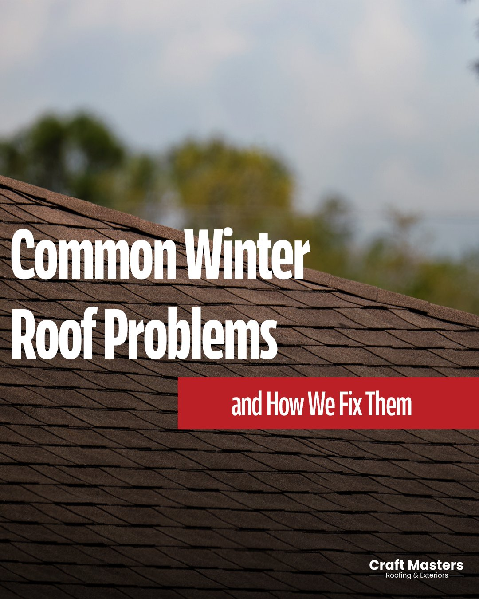
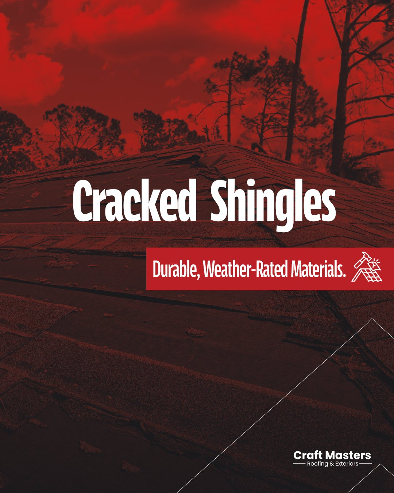
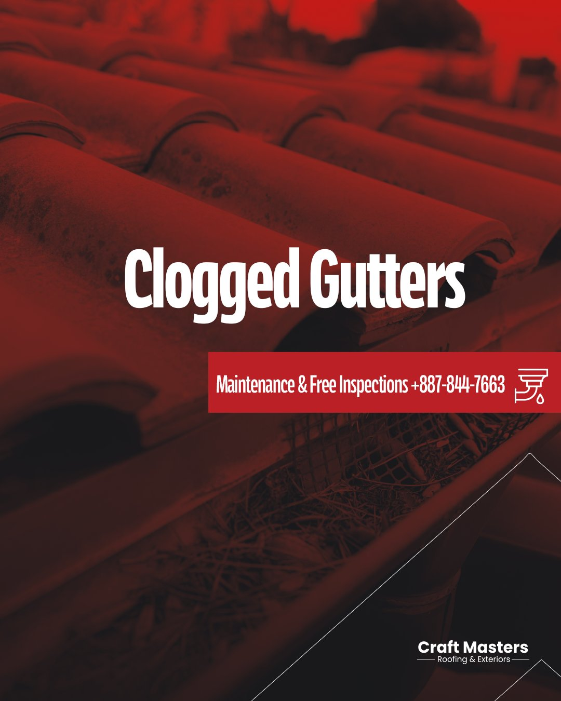
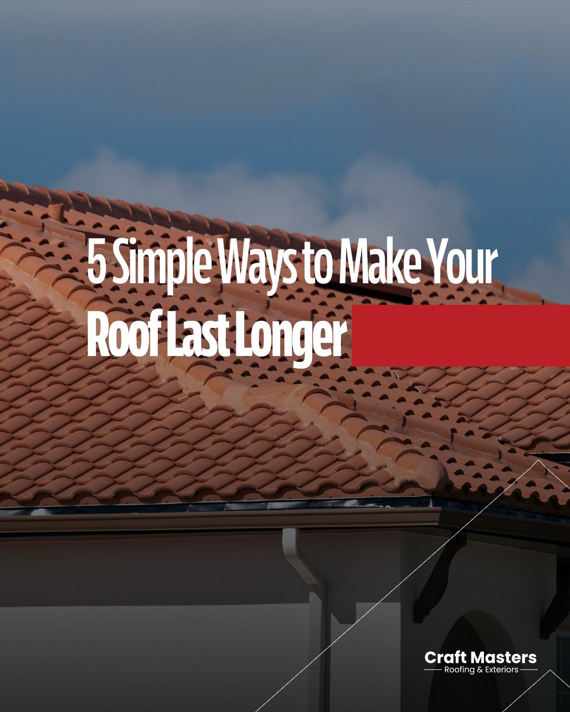
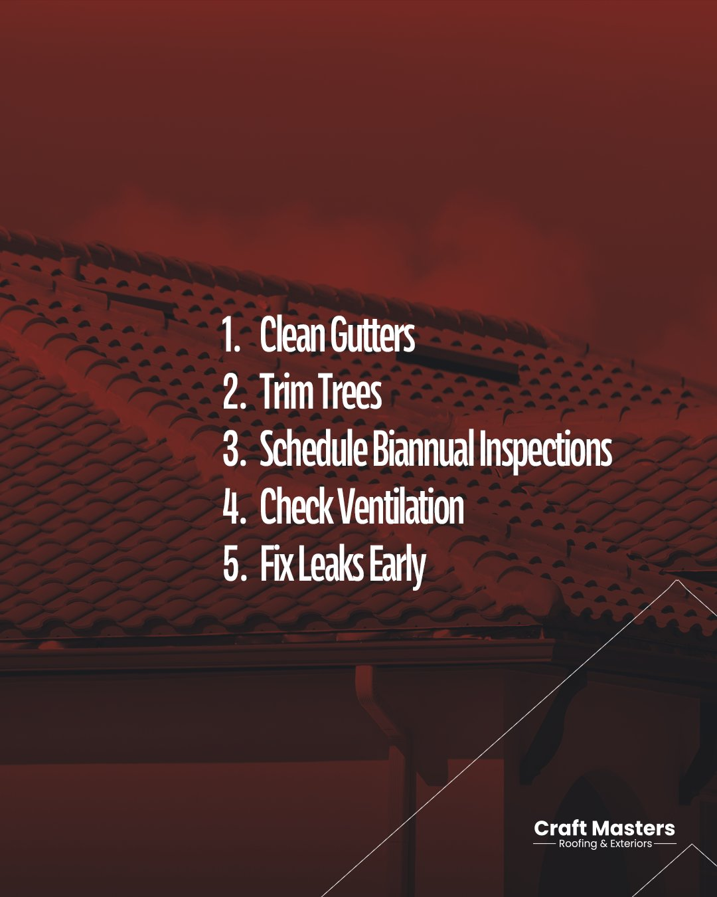
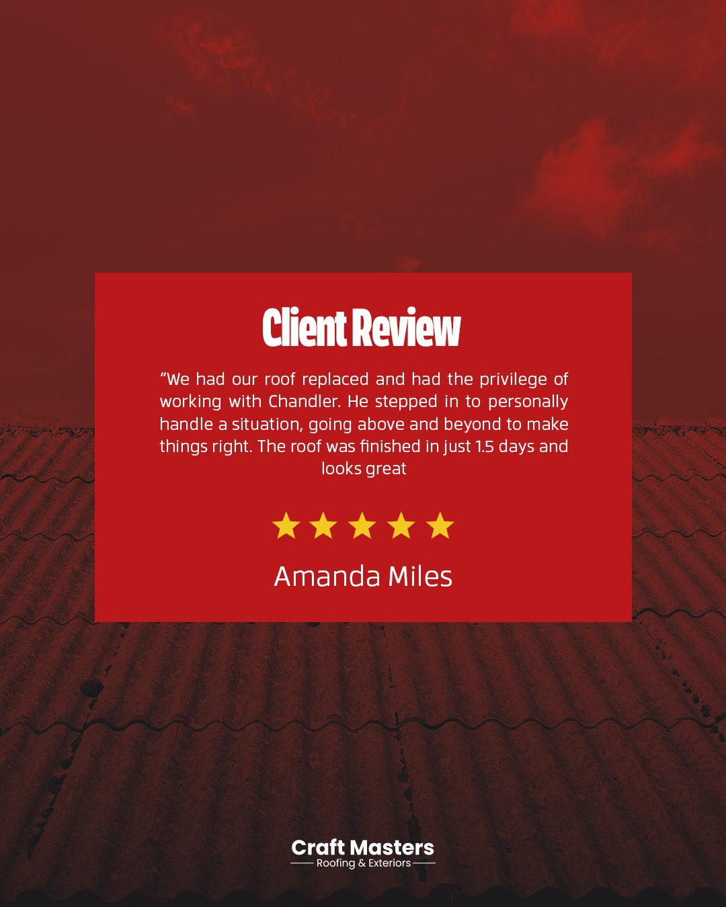

Five months designing a recruitment funnel, customer-facing web pages, and a social content system for a Houston-based roofing company.
Craft Masters is a residential and commercial roofing company based in Houston, Texas, with 14+ years in business. During a five-month internship, I worked as the sole designer on their website and as part of a two-person team on social media.
The work spanned three areas: a recruitment funnel built from scratch, customer-facing web pages on Squarespace, and a high-volume social content system. All design direction came from the Craft Masters team — my job was to translate that direction into polished, on-brand deliverables, fast and consistently across formats.
Tools: Squarespace · Adobe Photoshop · Adobe Illustrator · Adobe Premiere Pro
Craft Masters needed to hire roofing sales consultants but had no dedicated recruitment page — applicants were going through the general contact form. I designed a complete funnel: a hiring landing page, an application form with résumé and video upload, and supporting recruitment videos for social.
The headline — "Now Hiring: Roofing Solutions Consultants — Earn $85K–$175K+ Your First Year" — leads with compensation because that's what the team wanted front and center for this audience. The page uses Craft Masters red as a single CTA color so the "Apply Now" button is the only thing competing for attention.
"We needed something that would make the right person stop scrolling. Lead with the money, get them to apply, keep it simple."
I designed and built five customer-facing pages on the Craft Masters site, each addressing a specific stage of the buying decision — from research, to trust-building, to inquiry.
FAQ page — organized into four columns (About, Services, Materials & Warranty, Process & Timelines) to let visitors find answers without scrolling through a single long list.
Financing Calculator page — introduces the Enhancify partner tool and explains affordable payment plans before sending visitors out to the calculator.
Blog section — seven posts covering seasonal roofing topics, written by the team and laid out by me on Squarespace.
All five pages share the same navigation, type system, and red / blue color treatment so the site reads as one brand.
Working with one other designer, I produced social content across two formats: a multi-slide Instagram carousel and a series of standalone feed posts reinforcing the same themes.
What ties them together is the visual system: heavy red duotone photography, condensed sans-serif headlines, an angled white outline pulled from the Craft Masters logo, and a red label bar for the supporting line. I extended that system consistently across every piece so the feed reads as one campaign instead of disconnected posts.
A 4-slide swipeable post walking homeowners through the three most common winter roof issues, with how Craft Masters fixes each one.



Individual posts published across the feed, each addressing one winter roof issue at a time using the same visual system as the carousel.


A standalone testimonial post — same visual system, different purpose: social proof.

The visual treatment — red duotone, condensed display type, angled white outline — became the recognizable Craft Masters look across the entire social feed.